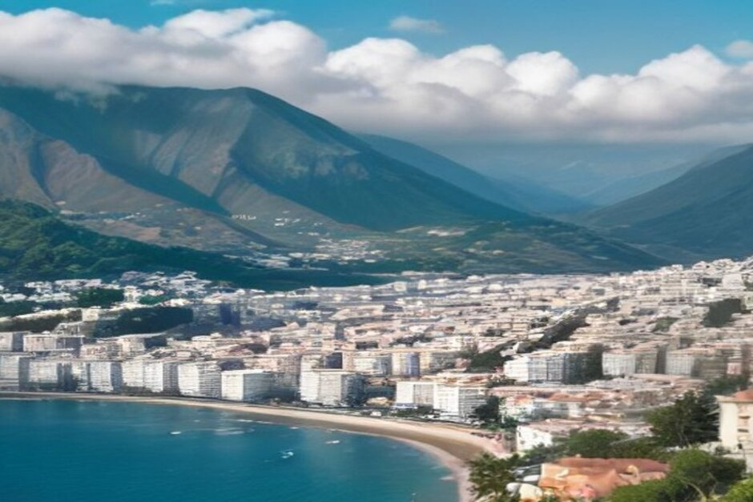
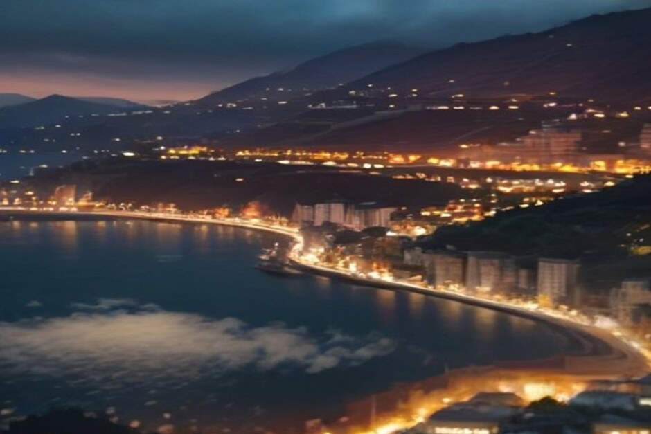

Madeira in inverno è una di quelle mete che si cercano quando in Italia comincia il grigio: dicembre, gennaio o febbraio, e la voglia di camminare senza cappotto. Ma com'è davvero il clima, piove tanto, il mare si può toccare? Ve lo raccontiamo da Funchal, dove la barca esce anche a gennaio.
Madeira a dicembre, gennaio e febbraio: il clima in breve
A Funchal le massime di giorno stanno tra i 18 e i 20°C per tutto l'inverno, e di notte raramente si scende sotto i 13°C. Il clima di dicembre, quindi, è già più vicino a un aprile mite che a un inverno europeo. I madeirensi chiamano l'isola "l'isola dell'eterna primavera", e a gennaio si capisce perché.
Un'isola in mezzo all'Atlantico, davanti alle coste del Nord Africa, non ha le stagioni nette a cui siamo abituati. Per la sera basta una giacca leggera, non serve il cappotto.

Piove molto a Madeira in inverno?
Un po' sì, ma meno di quanto si teme. Funchal e la costa sud hanno pioggia in circa sei o sette giorni al mese tra dicembre e gennaio, con un leggero miglioramento a febbraio. Di solito sono rovesci brevi, non una giornata intera di acqua.
La cosa che conta di più è dove state. La costa nord (Santana, São Vicente, Porto Moniz) è più piovosa e nuvolosa, mentre a sud, intorno a Funchal e Câmara de Lobos, resta in genere più asciutto e soleggiato per buona parte della stagione. Se le previsioni sono incerte, organizzate la giornata sul versante sud.
Madeira a febbraio, a gennaio, a dicembre: cambia qualcosa?
Le temperature sono simili in tutti e tre i mesi, quindi la scelta dipende soprattutto da cosa volete vedere.
- Dicembre è il mese delle luci e degli eventi: Natale e Capodanno sono il periodo più vivace e più affollato dell'anno.
- Gennaio è più tranquillo dopo le feste, con l'isola che torna ai ritmi di tutti i giorni.
- Febbraio ha un po' meno giorni di pioggia rispetto a dicembre e gennaio.
E settembre? Non è inverno, ma chi ci confronta spesso le due stagioni: a fine estate il mare è sui 22-23°C, contro i 18-19°C dell'inverno. Se il bagno lungo è il centro del viaggio, settembre vi darà più soddisfazione.
Il mare è troppo freddo per fare il bagno?
Non troppo freddo, ma decisamente più fresco: l'Atlantico intorno a Madeira sta sui 18-19°C. Per molti è ancora nuotabile, soprattutto nelle calette riparate della costa sud, ma è un'altra cosa rispetto a un tuffo di luglio. Portate comunque il costume: nelle giornate migliori della costa sud può venire voglia di un bagno veloce anche a gennaio.

Cosa fare a Madeira in inverno
Natale e Capodanno a Funchal
È la finestra di eventi più importante dell'isola. Dai primi giorni di dicembre il centro di Funchal si riempie di luci: archi illuminati, scene animate e alberi decorati lungo l'Avenida Arriaga e sul lungomare della marina.
Il 23 dicembre il Mercado dos Lavradores ospita la sua celebre notte di mercato, piena di gente del posto che compra fiori, castagne e regali dell'ultimo minuto.
Il 31 dicembre la baia di Funchal ospita uno dei più grandi spettacoli pirotecnici del mondo: otto minuti di fuochi lanciati da decine di postazioni intorno all'anfiteatro, dal porto e da barche al largo. Il Guinness World Records lo riconobbe come il più grande del mondo quando vinse il titolo per la prima volta, nel 2006. Se pensate al Capodanno, prenotate l'alloggio con largo anticipo, meglio con vista sulla baia: è la settimana più affollata del calendario.
Passeggiate, mercati e costa
Fuori dai giorni di festa, l'inverno è il momento in cui luoghi come Cabo Girão e il Mercado dos Lavradores sono molto più tranquilli. Il tempo, anche se meno sicuro che d'estate, è abbastanza mite per camminare, visitare e uscire in mare.
Una gita in barca in inverno
Sì, si può, con le condizioni del mare e il meteo a favore. Le nostre uscite partono dalla Marina do Funchal, Pontile C, tutto l'anno, e in inverno dipendono dalle previsioni del giorno più che in estate. La barca è sempre solo per il vostro gruppo, fino a 5 persone, con due skipper abilitati di Madeira.
- Il tramonto in barca parte 1 h 15 prima del tramonto, tutto l'anno, e non prevede il bagno: è pensato proprio per le giornate più fresche. Due ore fino a Cabo Girão per 400 EUR, oppure 2 h 30 fino a Ribeira Brava per 500 EUR.
- La gita di giorno parte alle 10:00 o alle 14:00: 2 h 30 fino a Ribeira Brava per 500 EUR, o 3 ore fino a Ponta do Sol per 600 EUR, con Câmara de Lobos, Cabo Girão e una sosta per il bagno e le tavole da paddle a Fajã dos Padres. In inverno vale soprattutto nelle giornate più miti e soleggiate, ma mettete in conto un'acqua frizzante più che calda.
I prezzi sono per tutta la barca, mai a persona. Cibo e bevande a bordo, un video a 360° con Insta360, le riprese con il drone (se il tempo lo permette) e le foto scattate con una vera fotocamera sono compresi. Potete cancellare gratuitamente fino a 24 ore prima della partenza. Trovate il quadro completo delle uscite in esperienze, oppure un confronto in gite in barca a Madeira.
Cosa mettere in valigia
A strati, non un cappotto pesante. Una giacca antipioggia comprimibile merita un posto nel bagaglio, insieme a un maglione più caldo per la sera e per la montagna: sul Pico do Arieiro e sul Pico Ruivo si possono avere temperature vicine allo zero e, ogni tanto, la neve, un contrasto netto con la costa.
Le scarpe contano più del solito: con la pioggia invernale i ciottoli delle strade e i sentieri delle levadas diventano scivolosi, quindi servono suole con buona presa. E il costume, come detto, non lasciatelo a casa. Per altre informazioni su arrivo e punto d'incontro, c'è la pagina informazioni pratiche.
Conviene andare a Madeira in inverno?
Per la maggior parte dei viaggiatori sì, soprattutto se pesano di più la tranquillità e il prezzo del sole garantito. Voli e hotel costano in genere meno rispetto al picco di luglio-settembre, i posti più noti sono meno affollati e il clima resta mite.
Il compromesso è il mare: se il centro del viaggio è un bagno lungo e caldo, meglio primavera, estate o l'inizio dell'autunno. Se invece venite per la costa, il cibo, le luci di Natale o i fuochi d'artificio, l'inverno a Madeira non delude.
Madeira non ha davvero una bassa stagione: ne ha una più fresca.
Qualunque mese scegliate, guardate le previsioni uno o due giorni prima e lasciate spazio alla flessibilità. Il tempo dell'isola cambia in fretta, e in mare una mattina tranquilla può diventare la parte più bella del viaggio.